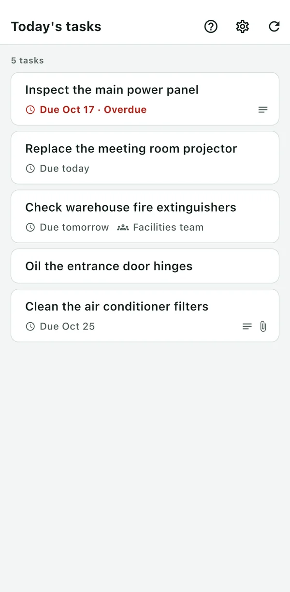
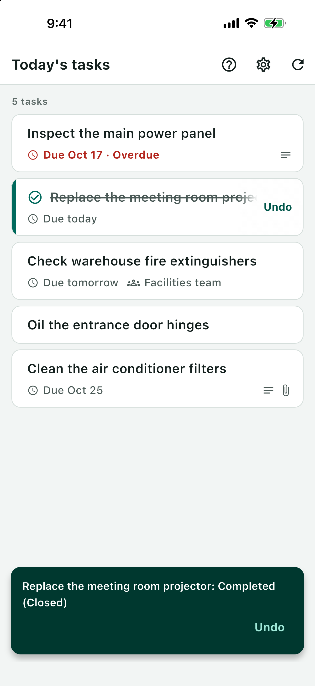
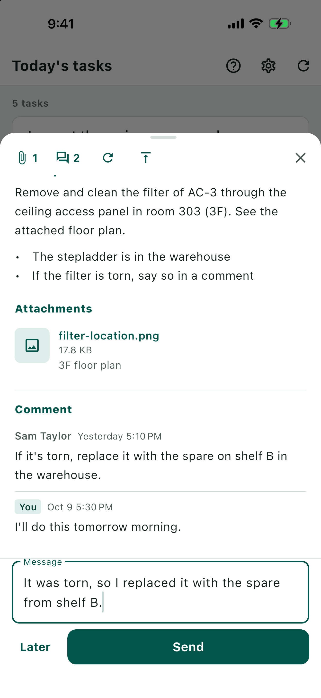

Check your assigned tasks.
See open tasks assigned to you or your group. Open a task to read its description and view attached images.

Do Redmine updates wait until you’re back at your computer? With BeatMine, update Redmine from your phone as soon as the work is done. Share progress with your team and move the project forward.
Free to use
For iPhone · iOS 15 or later

Supports Redmine 6.0 / 6.1 / 7.0 · See connection requirements
If Redmine updates usually wait until you’re back at your computer, try making them where the work happens. BeatMine saves completions and comments to your existing Redmine, so your team can check them as usual.
Check the details.
Then update the task on the spot.
See open tasks assigned to you or your group. Open a task to read its description and view attached images.

When the work is done, swipe the task right. You can check on screen whether the update reached Redmine.
Note a replaced part or leave details for the next person. Your comment is saved in the task’s Redmine history.
Task information goes directly between your iPhone and your Redmine. We don’t collect your task data. Your API key is stored in your device’s secure storage.
Privacy policy →Connect to the Redmine your team already uses. If you’re unsure whether its REST API is enabled, check with your Redmine administrator.
Depending on your Redmine settings, you may be unable to connect or use some features.
Connection requirements and limitations →Free to use
For iPhone · iOS 15 or later
